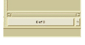

Entities
When you use the Browser to view the results of queries, you can perform the following operations:
• navigate your source
• view instances of selected entities
• make queries about selected entities
• examine the resulting list of entities
• create groups containing selected entities
Use the scroll bars to navigate through the list of entities. Select an entity to view related information in the status bar at the bottom of the Browser.
For more information about launching text views, see Working With the Viewer and Working With the Minibrowser.
Double clicking any entity in the Elements or Results column automatically launches the Viewer, which displays an Emacs-based text view of the selected item (you can select a gVim emulator, if you prefer; Choosing an IDE). The Emacs cursor is focused on the selected item.

More information on the Filter List dialog box and its options appears in Querying an Information Model.
You can view customized subsets of the items in the Results column, using a list filter. By clicking the Filter List button at the bottom of the Results column, you invoke the Filter List dialog box. This enables you to specify pattern-matching strings to limit the number of items that appear in the Results column, and to specify parameters that determine the amount and appearance of information that appears in the Results column.